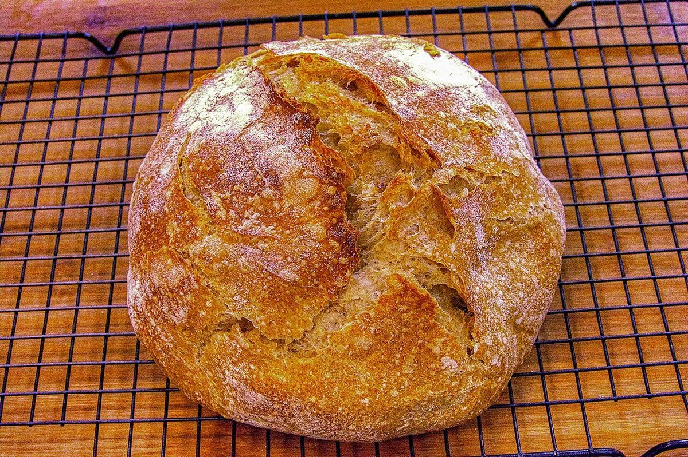
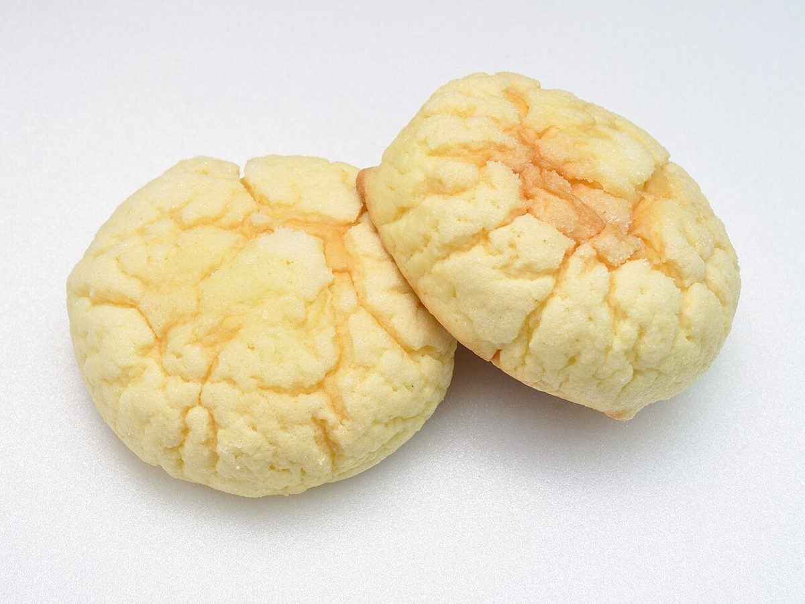
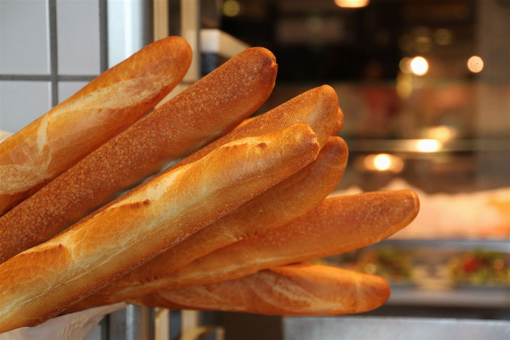
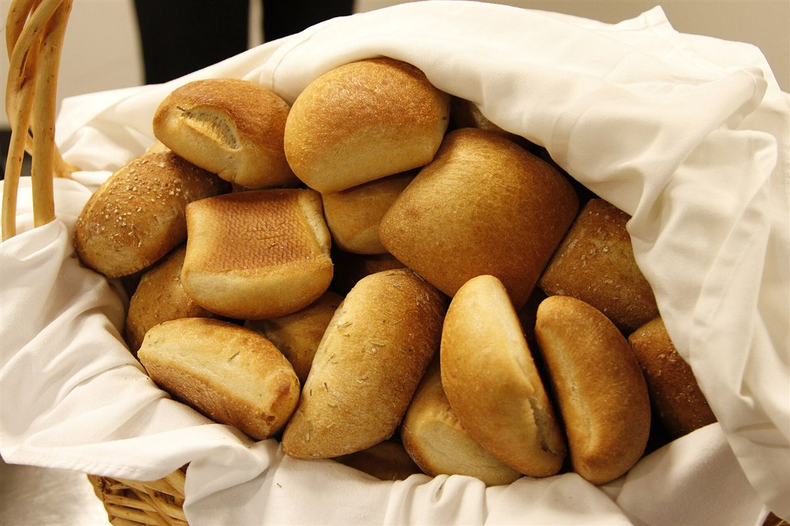

ベーカリー エレパント
写真はフリー素材のイメージで、ベーカリー エレパントの実際の店舗・商品ではありません。他地域で撮影されたもの、撮影地が不明のものを含みます。




色チップはイメージです。番号は並び順を示すだけで、商品名ではありません。
制作側の案:焼き色見本帳
このページは、お店のお考えではなく、制作側が試作のために立てた案です。
淡い黄色、こんがりした茶色、粉の白。パンの焼き色を色見本のように並べて、ページをめくる感覚で巡れるサイトにしてみました。
言葉での説明よりも、色と焼き色で雰囲気をお伝えする、という狙いです。
お店の由来や考え方はまだ伺っていないため、ここには書いていません。
お店の情報
- 住所
- 滋賀県草津市上笠2丁目10-5
- @elepant_bakery
- 営業時間
- 準備中(お問い合わせください)
- 定休日
- 準備中(お問い合わせください)
- メニュー
- 準備中(お問い合わせください)
- 料金
- 準備中(お問い合わせください)
写真はフリー素材のイメージで、ベーカリー エレパントの実際の店舗・商品ではありません。他地域で撮影されたもの、撮影地が不明のものを含みます。